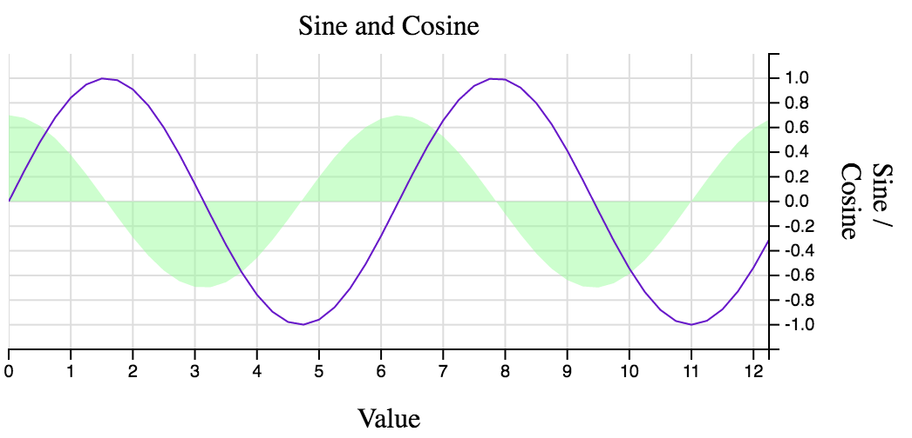

d3fc-chart View on GitHub
A simple Cartesian chart component that renders to canvas or SVG.

API Reference
General API
d3fc provides a number of components / building blocks that make it easier to build bespoke d3 charts, using SVG and canvas. If you just need a simple Cartesian chart, this package is a good starting point, providing a simple component that is itself built using components from the other d3fc packages (d3fc-element, d3fc-data-join, d3fc-axis, d3fc-series, etc ...).
Given the following div:
<div id="sine" style="width: 500px; height: 250px"></div>
The following code renders a Cartesian chart:
var data = d3.range(50).map((d) => ({
x: d / 4,
y: Math.sin(d / 4),
z: Math.cos(d / 4) * 0.7
}));
// use d3fc-extent to compute the domain for each axis
var xExtent = fc.extentLinear()
.accessors([d => d.x]);
var yExtent = fc.extentLinear()
.accessors([d => d.y, d => d.z])
.pad([0.1, 0.1])
// gridlines (from d3fc-annotation)
var gridlines = fc.annotationSvgGridline();
// series (from d3fc-series)
var line = fc.seriesSvgLine();
var area = fc.seriesSvgArea()
.mainValue(d => d.z);
// combine into a single series
var multi = fc.seriesSvgMulti()
.series([gridlines, area, line]);
// the Cartesian component, which uses d3fc-element for layout
// of the standard features of a chart (axes, labels, plot area)
var chart = fc.chartSvgCartesian(
d3.scaleLinear(),
d3.scaleLinear()
)
.xLabel('Value')
.yLabel('Sine / Cosine')
.chartLabel('Sine and Cosine')
.yDomain(yExtent(data))
.xDomain(xExtent(data))
.plotArea(multi);
// render
d3.select('#sine')
.datum(data)
.call(chart);
Rendering the following:
The chart is constructed using a pair of scales. The scale configuration properties are rebound (i.e. re-exposed) via the chart component with x and y prefixes. The chart takes care of layout, and will also re-render if the size of the containing element changes.
Cartesian
# fc.chartCanvasCartesian(xScale, yScale) # fc.chartSvgCartesian(xScale, yScale)
Constructs a new Cartesian chart with the given scales.
For charts that contain a very high number of data-points, rendering to canvas can reduce the rendering time and improve performance. The chartCanvasCartesian components provides exactly the same API as its SVG equivalent, but instead constructs a canvas element for rendering the series associated with the plotArea property. The canvas Cartesian chart should be used in conjunction with the canvas-based renderers from the d3fc-series package.
# cartesian.xLabel(label)
# cartesian.yLabel(label)
# cartesian.chartLabel(label)
If label is specified, sets the text for the given label, and returns the Cartesian chart. If label is not specified, returns the label text.
# cartesian.xOrient(orient)
# cartesian.yOrient(orient)
If orient is specified, sets the orientation for the axis in the given direction, and returns the Cartesian chart. If orient is not specified, returns the orientation. Valid values for yOrient are left or right, and for xOrient, top or bottom.
# cartesian.decorate(decorateFunc)
If decorateFunc is specified, sets the decorator function to the specified, and returns the Cartesian chart. If decorateFunc is not specified, returns the current decorator function.
# cartesian.xDomain(...)
# cartesian.yDomain(...)
# cartesian.xNice(...)
...
The Cartesian chart exposes the scale properties with either an x or y prefix.
# cartesian.xTicks(...)
# cartesian.xTickFormat(...)
# cartesian.xDecorate(...)
# cartesian.yTicks(...)
# cartesian.yTickFormat(...)
# cartesian.yDecorate(...)
...
The Cartesian chart exposes the d3fc-axis ticks, tickFormat and decorate properties with either an x or y prefix.
Found a problem in this page? Submit a fix!